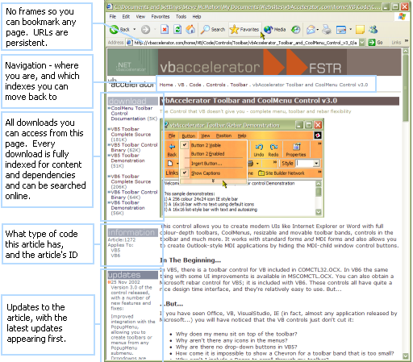
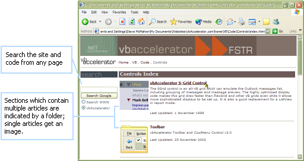
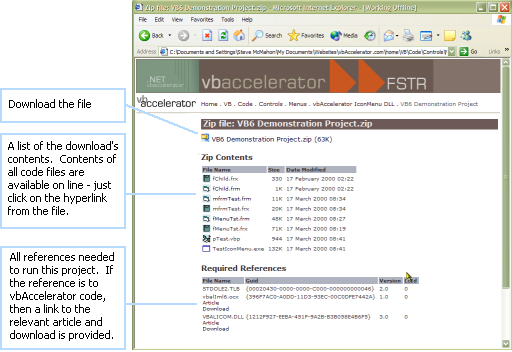
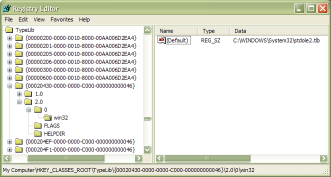

9 Jun 2004
9 Jun 2004
Added link rel tags to all pages for ease of navigation.
Updated to use the Creative Commons licensing system.
RDF descriptors now generated for all pages and Zip files.
Modified the stylesheets to enhance accessibility (all fonts can now be resized.
Code now online for C and IDL/ODL files as well.
Copyright page (finally) in place.

Using the Site
vbAccelerator: what you can do, how it works, how to use it and how it was put together
Welcome to the vbAccelerator site. Here you can learn about the site's features, navigating the array of content and find out how the site was put together.
Main Features
The new site has a raft of improvements over the previous site. The main features are:
Indexes of pages have also been improved:
Navigation
Navigation through the site has been hugely simplified. The last vbAccelerator site was framed, with ad-hoc links between pages and their indexes. The new site has no frames, so you can bookmark any page, and the URLs are persistent, so they won't change once you've bookmarked them. Each page now has a standard navigation bar at the top and bottom showing you where you are on the site and allowing you to navigate back up to the containing indexes for the article you're reading. Not just that, but you also get the ability to navigate the contents of any code download files too!
Searching
Site searches are now provided by the ever wonderful Google. You can add this kind of search facility to your own site very simply and in a variety of ways. Have a look at Google's Services page for more information.
Full Code Search
The site now contains all of the code online as HTML documents - which means you can search the code online. Wondering how to use the ShGetFileInfo API function from VB? Confused about using a StreamReader in .NET? Simply type what you're looking for into the search box and you'll find any source code, associated articles and downloads on the site which refer to it.
Article Search
Of course, all of the article text is searchable as well.
Dependencies
What do I need before I start trying to use this project? This used to be a challenge with the previous version of vbAccelerator. Now its much easier. Whenever you download a code sample, you get the new code download page:
The dependencies are listed after the content of the download. If the dependency is a VB/COM one, then the Guid, Version and Lcid of the dependency is listed. You can use these to check in your system's registry if you have the file: simply look under
HKEY_CLASSES_ROOT\TypeLib\[Guid]
For the relevant item. Provided you have the same version or higher of the type library then things will work fine (assuming you actually have the file that's pointed to under the key!). For example, here is the StdOle2.tlb Type Library key in RegEdit, which you will find under HKEY_CLASSES_ROOT\TypeLib\{00020430-0000-0000-C000-000000000046}\2.0\0\win32:
Finding a registered Type Library in RegEdit
For .NET articles, the dependencies list shows all of the assemblies which are referenced by the project.
CSS Formatting
Page styles are now rendered using CSS. If you have a browser which supports CSS (modern versions of Mozilla and any of its derivatives, IE 5 and above and so on). Please note that if you use Netscape 4.x you are likely to have problems with the pages owing to that particular browser's appalling and somewhat arbitrary implementation of CSS.